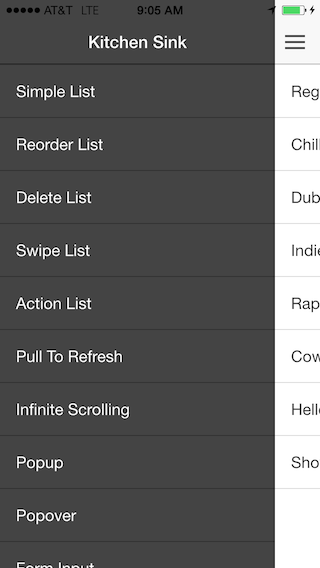

Building Native-Like Hybrid Apps with Ionic
Christophe Coenraets
@ccoenraets
http://coenraets.org
You
Native SDKs are Great
UI Components
UI Patterns
Architecture Patterns
High Performance
Mobile Services
Tools
It's Not All Rosy
Multiple code bases
Multiple teams
You still don't have a mobile web app
Hybrid Apps are Great
Single code base
Familiar (HTML, JS, CSS)
Native APIs (plugins)
Run & debug in browser
Web standards momentum
Mobile web app for free
It's Not All Rosy
No UI Components
No UI Patterns
No Architecture Patterns
No Built-In Performance
Easy to write ugly apps
Easy to write slow apps
There is no Hybrid SDK to enforce UI and architecture patterns
The Hybrid SDK
Hybrid SDK
UI Components
UI Patterns
Architecture Patterns
Built-In Performance
Mobile Services
Tools
Hybrid SDK
Framework
Your App
Ionic
AngularJS
Cordova
Native SDK
Services
Analytics
Push
View
UI Components
Action Sheets
Popover
Carousel
Form Inputs
Sidemenu
Tabs
UI Patterns
Pull to Refresh
Infinite Scrolling
Swipe to Reveal
Action Sheets
Sidemenu
Carousel
Architecture Patterns
AngularJS
MVC
Dependency Injection
Directives
Data binding
Templates
Native Integration
ngCordova
Camera
Social Sharing
Touch Id
OAuth
Geolocation
Performance
Hardware accelerated animations
Minimal DOM Manipulation
No jQuery (you could still include it if you want)
Demos

Tools
Let's Build an App
npm install -g cordova ionic
ionic start myapp sidemenu
cd myapp
ionic serve
ionic server --lab
Build Locally
ionic platform add ios
ionic build ios
ionic platform add android
ionic build android
Creator
Services
Ionic Push
ionic start myapp push
cd my app
ionic upload
ionic platform add ios
// Get App Id and API key
// Configure push for platform
// Upload push cert to Ionic.io
ionic push --ios-dev-cert
ionic push --send
// provide secret key + token
What's Next?
Thank You!
@ccoenraets
http://coenraets.org